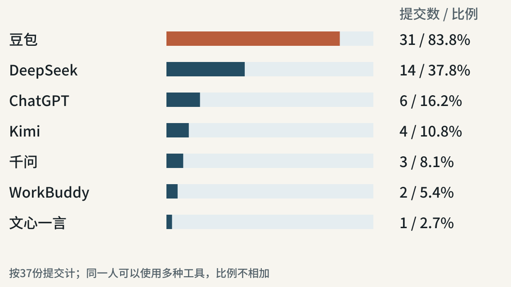
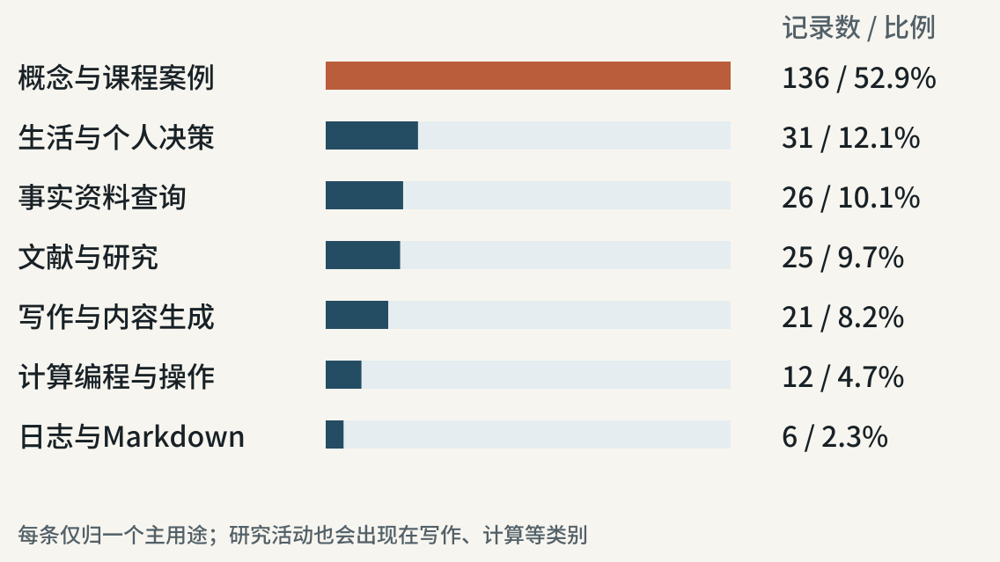
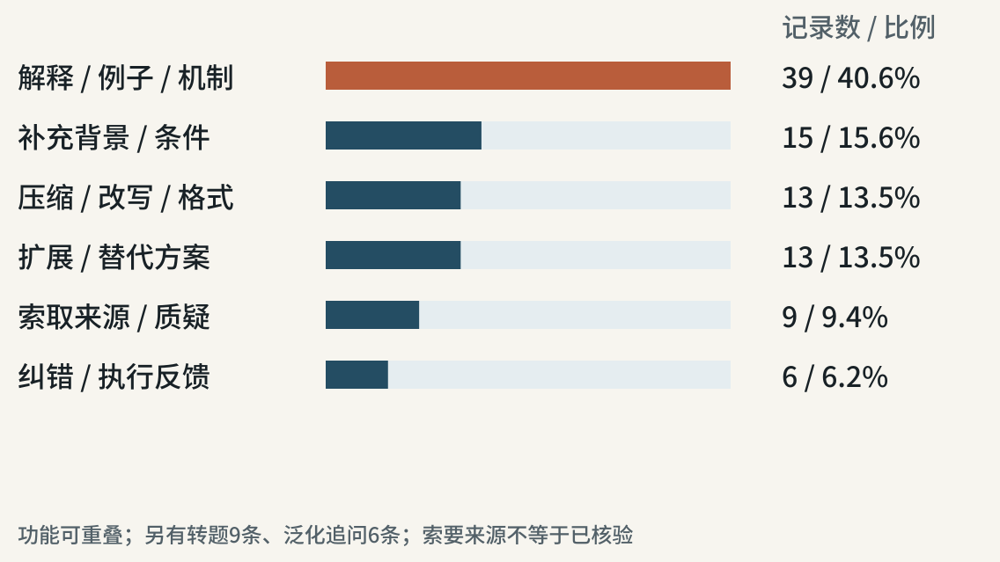

37名学生
实际人数37人
收到37份作业
如何检查 AI 的回答
 VER. 2609.2
Built with impress.js
VER. 2609.2
Built with impress.js
2026 年 9 月 17-23 日使用日志，9 月 27 日接收
豆包出现在 31 份作业中；16 份作业记录了两种及以上工具

概念解释与课程案例占 136 条，约为全部记录的一半

96 条记录保留两段及以上提示，占全部记录 37.4%

207 条自报已解决，占全部 257 条记录的 80.5%
| 自报状态 | 记录数 |
|---|---|
| 已解决 | 207 |
| 基本解决 | 11 |
| 部分解决 | 20 |
| 未解决 | 7 |
| 未填写 | 12 |
同样，自报“已解决”可能存在偏差
只看 207 条自报已解决的记录
有人写“足够我回答课堂问题”。这是否说明回答中的事实是正确的？
没写查阅、复算、运行过程
写了其他理由，或理由缺失
需要回想具体做过什么
以下查阅、复算和尝试来自自报
| 主要依据 | 条数 |
|---|---|
| 具体查阅、复算或运行 | 6 |
| 声称与教师、课本或已有知识一致 | 7 |
| 实践尝试或外部反馈 | 7 |
| 用另一AI复核 | 1 |
| 仍待核实或实践 | 7 |
| 依据缺失、占位或错配 | 6 |
想用仿真研究设备故障，又请另一个 AI 确认能不能做
任务与 AI 给出的方向（概括）
围绕工厂设备故障选题。AI进一步建议：模拟设备停机，比较不同安排对订单延期的影响。
给了我一个更清晰化的选题方案，并解释了其可行性逻辑，我将学以致用
学生判断依据节选；原记录标为“已解决”
如果还不知道能否拿到故障记录，现在能说这个题目做得出来吗？
学生想避开供应链方向；AI没有列出论文或答辩记录
供应链方向确实和物流工程高度重合、选题同质化严重、答辩撞题多。
AI回答节选
要确认“撞题多”，你会查哪些材料？
可查本专业近年的学位论文、已有开题题目，或向导师了解实际情况
AI顺着你的顾虑说言时，仍要追问：它查了什么？
AI 列出了所需数据，但这些数据可以获取吗？
工艺路线、加工时间、设备故障记录、订单信息
工厂能提供哪几项？缺少的记录能否补采？
追问哪些学生被拿来比较
对比实验是谁和谁对比，如果是两个学生之间对比，那人就是变量吧，感觉得不到准确的结果？
学生提示词节选
如果两组原来的成绩就不同，还能直接把后来的差异归因于AI吗？
日志中的论文链接只剩附件占位，不能直接点开核对
我刚刚又核对了论文原文和 CEPR 的介绍，先纠正一个地方……
AI回答节选；本复盘未确认其论文转述是否准确
原记录中两个数组都是3×2，直接做矩阵乘法报错
01
02
03A = np.random.rand(3, 2)
B = np.random.rand(3, 2)
C = A.dot(B)要把两个数组对应位置的数相乘，应该用哪一种写法？
使用 A * B，得到3×2数组
使用 A.dot(B.T)，得到3×3数组
说明想怎么算，AI才有依据在两种可运行写法中选择
我本意是逐元素相乘，改成
A*B后正常运行了。
学生后续提示节选；运行通过为学生自报
A * B把对应位置的数相乘，符合这次补充的要求A.dot(B.T)也能运行，但得到3×3结果，做的是另一种运算两位学生都在准备课堂讨论，对“已解决”的要求却不同
“内容简单明了，够我回答问题”
学生判断依据节选
“关键数字得自己核实”
学生判断依据节选
如果发言中引用了发电量、移民人数或文物数量，你会怎样核对？
可以帮助准备发言；引用具体数字时，还应查来源、年份和统计范围
学生看完AI的文字方法后，转向视频教程
照文字仍不会操作时，找视频看清手怎么动，可能比继续问更有用
单个案例只能提示一种可能的问题
136条在解释概念或课程案例
173条“已解决”没有写出具体检查过程
第二个AI赞同，就认为选题可行
AI说查了论文，日志却没有可打开的原文链接
这些日志作为我们的起点
选题、论文和代码，需要检查的东西并不相同
| 准备采用的回答 | 先做哪一项检查 |
|---|---|
| 这个仿真选题可行 | 询问能否取得停机和维修记录 |
| 论文说明AI影响成绩 | 查原文怎样选样本、比较成绩 |
| 这段代码已经改好了 | 用能手算的输入对照输出结果 |
从自己的日志选一条：你准备采用哪句话？先查哪一件事？
把“继续说”“再详细些”换成与当前疑问有关的问题
| 还没弄清的事 | 可以怎样追问AI |
|---|---|
| 论文里的两组学生原来是否相近 | 给出原文中说明分组和原有成绩的位置 |
| 故障仿真需要哪些数据 | 列出必须取得的字段；缺哪项就做不了 |
| 代码为什么还算错 | 这是输入、实际输出和预期输出，差异在哪？ |
拿到论文位置后要打开原文；拿到修改后的代码要对照预期输出
“运行正常”可以再写成别人能照着重做的记录
怎样补写逐元素相乘的记录（教学示例）
用小数组逐项手算，再与 A * B 的输出比较
保存输入、手算结果和实际输出，逐项记录是否一致
还没有用原任务的数据检查；不能写成原任务已经完成
根据眼前的问题，换一种能提供所需信息的方法
| 眼前的问题 | 下一步可以做什么 |
|---|---|
| 论文链接打不开 | 用题目和作者检索原文 |
| 不知道工厂有什么记录 | 询问负责设备或生产记录的人 |
| 看文字仍不会收背包带 | 找能看清手部动作的视频 |
| 不知道选题能否在学期内完成 | 带上数据清单和小样例与导师讨论 |
以下是后续步骤
设备停机后，哪一种生产安排能减少订单延期
确认停机、维修、加工时间和订单记录
模拟一次停机，查看能否算出延期并比较安排
能做就继续；缺数据或算不出，就缩小问题或换题
选一条准备采用的AI回答，检查其中一个具体说法
同伴互看：你查的这件事，能否支持你准备采用的那句话？
下次翻开日志，能看见你实际查了什么、算了什么、试了什么
下课前写一句：我准备给哪条日志补做什么检查？